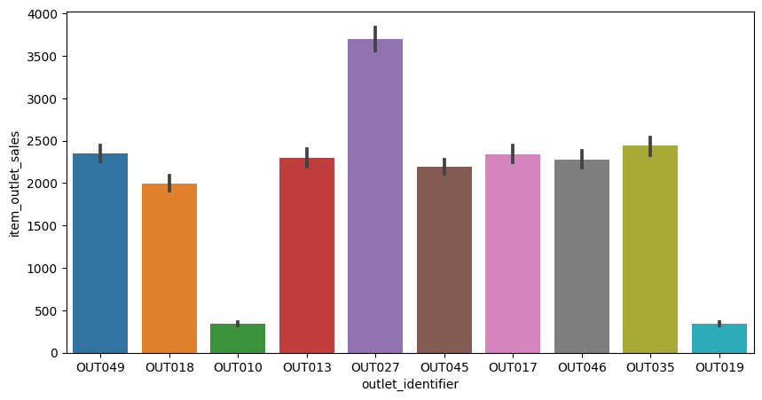

Graph
FINDING FREQUENCY COUNT OF OUTLET TYPE
sns.countplot(data = data, x = "outlet_type",hue = "outlet_size") plt.xticks(rotation =90)

understanding outlet_identifier depending on item_outlet_sales
import matplotlib.pyplot as plt plt.figure(figsize = (10,5)) sns.barplot(data = data, x = "outlet_identifier", y= "item_outlet_sales")
Understanding to ultet_establishment per year with respective to mean of each respective year item outlet sales
data.groupby("outlet_establishment_year")["item_outlet_sales"].mean().plot.bar() plt.ylabel("Mean of Item outlet sales")
Understanding to item_type per year with respective to mean of each respective year item outlet sales
data.groupby("item_type")["item_outlet_sales"].mean().plot.bar() plt.ylabel("Mean of Item outlet sales")
Understanding to outlet_type per year with respective to mean of each respective year item outlet sales
data.groupby("outlet_type")["item_outlet_sales"].mean().plot.bar()plt.ylabel("Mean of Item outlet sales")
FINDING CORRELATION BETWEEN EACH COLUMNS BY USING HEATMAP
plt.figure(figsize = (10,5)) sns.heatmap(new_data.corr(), cmap = "RdYlGn", annot = True)
VISUALIZING THE SKEWNESSS OF THE DATASET
# Before Transformation
fig, ax = plt.subplots(4,2,figsize = (15,15))
sns.distplot(new_data["item_visibility"], kde =True, ax=ax[0,0], color = "red")
sns.distplot(new_data["item_mrp"], kde =True, ax=ax[0,1], color = "blue")
sns.distplot(new_data["outlet_identifier"], kde =True, ax=ax[1,0], color = "orange")
sns.distplot(new_data["outlet_type"], kde =True, ax=ax[1,1], color = "black")
sns.distplot(new_data["outlet_size"], kde =True, ax=ax[2,0], color = "magenta")
sns.distplot(new_data["outlet_establishment_year"], kde =True, ax=ax[3,0])
sns.distplot(new_data["item_outlet_sales"], kde =True, ax=ax[3,1])
# After Transformation
fig, ax = plt.subplots(4,2,figsize = (15,15))
sns.distplot(new_data["item_visibility"], kde =True, ax=ax[0,0], color = "red")
sns.distplot(new_data["item_mrp"], kde =True, ax=ax[0,1], color = "blue")
sns.distplot(new_data["outlet_identifier"], kde =True, ax=ax[1,0], color = "orange")
sns.distplot(new_data["outlet_type"], kde =True, ax=ax[1,1], color = "black")
sns.distplot(new_data["outlet_size"], kde =True, ax=ax[2,0], color = "magenta")
sns.distplot(new_data["outlet_establishment_year"], kde =True, ax=ax[3,0])
sns.distplot(new_data["item_outlet_sales"], kde =True, ax=ax[3,1])

Residue of the Linear Regression Model
#Plotting Residual Plot plt.scatter(y_test,residue_lr, c = "red") plt.xlabel("residual") plt.ylabel("y_test") plt.axhline(y = 0)
Frequency count of the outlet_type
sns.countplot(data = test, x = "outlet_type",hue = "outlet_size") plt.xticks(rotation =90)